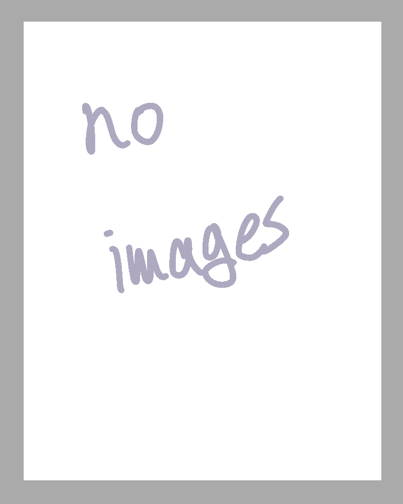
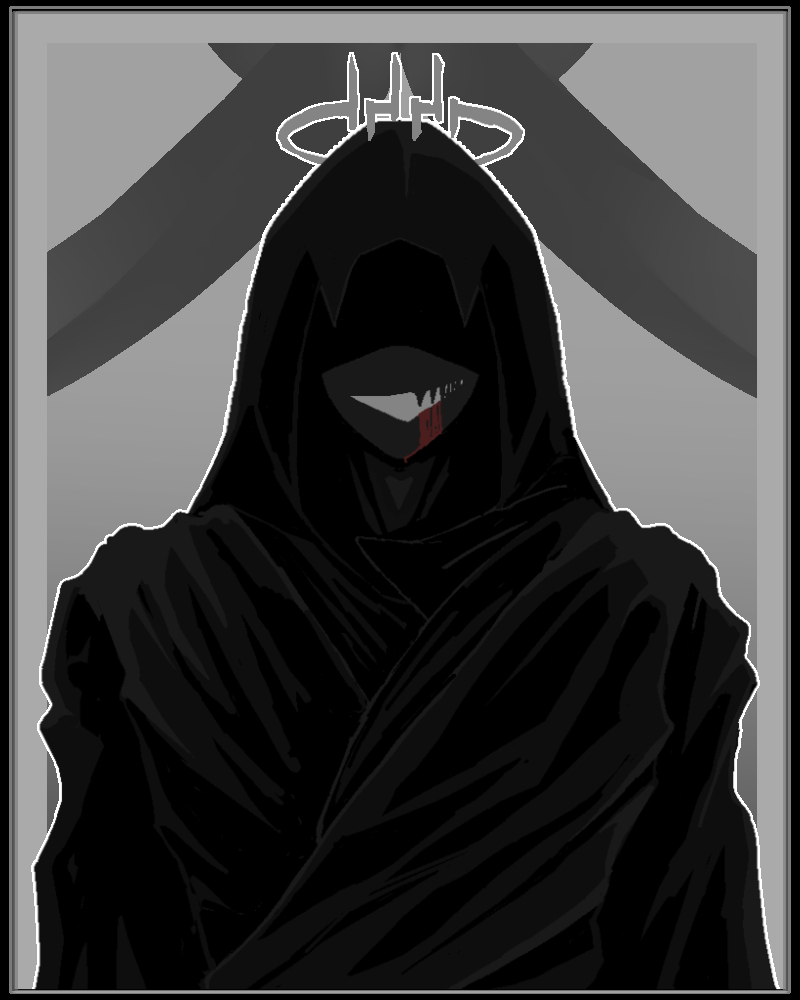
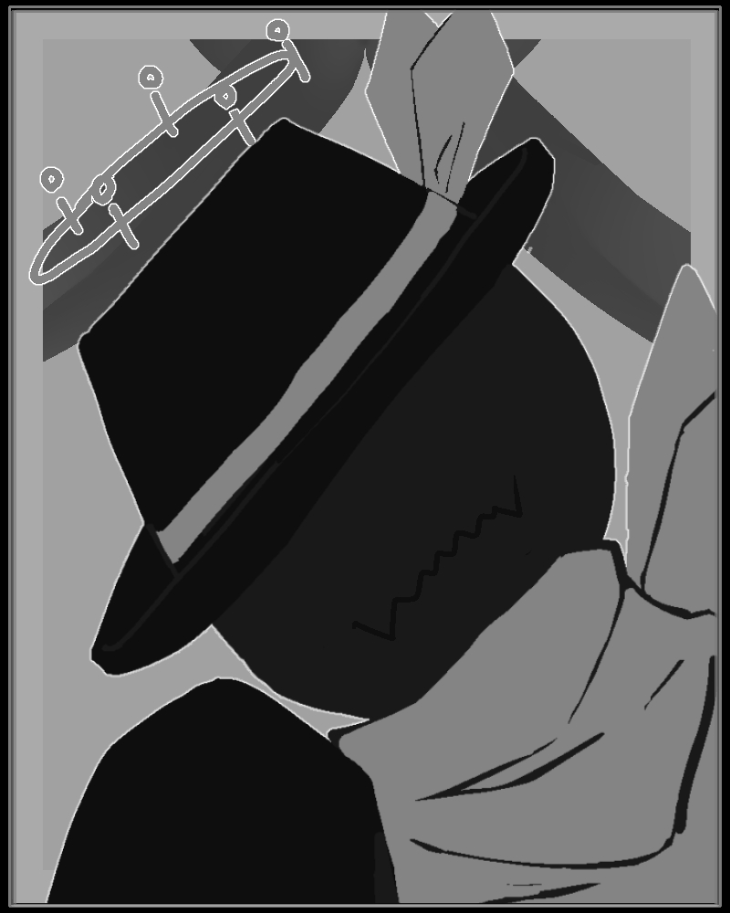
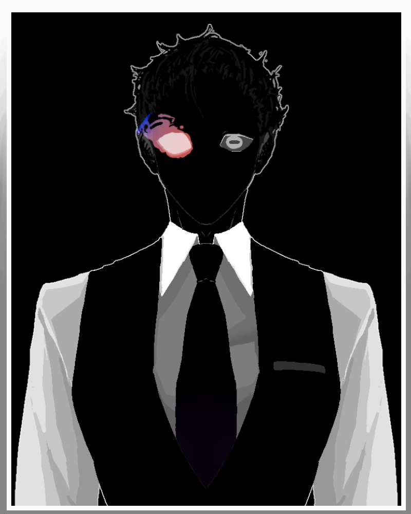
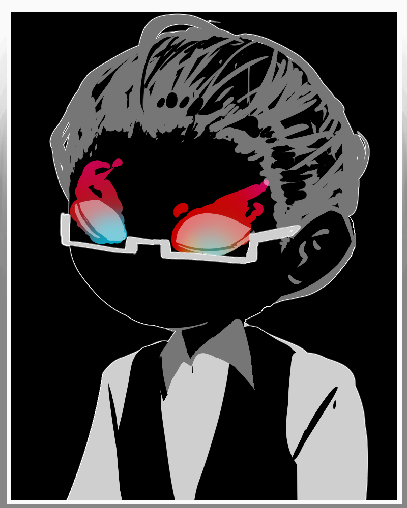
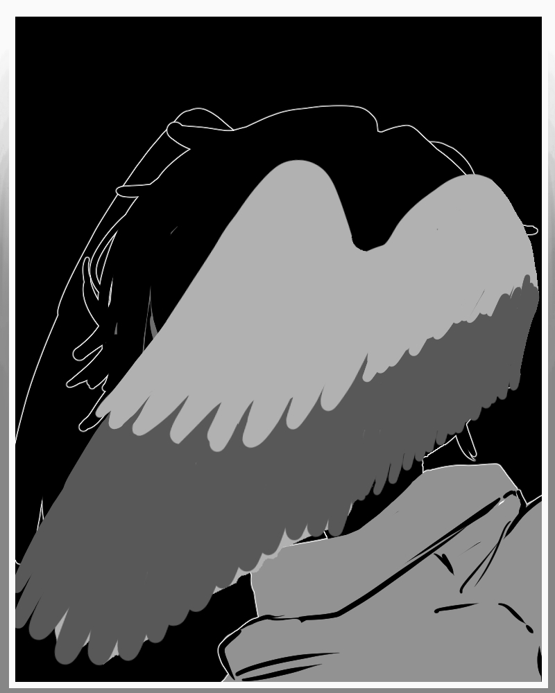

ここではTomonniterにおける世界観の詳細な説明や背景、特徴について詳しく紹介しています。
Tomonniterの世界では、国制度は廃止されており、代わりに3つの主要な区域に分かれていました。 現在は2つの区域が存在しています。中枢区は主に脳と脊髄から構成されており、一般的に中枢と言われているのは脊髄の部分です。
その役割は世界全体管理ですが、他にも様々なことを行っています。
脳
ここで生まれたものは、その役割のため決して外に出ることはできません。 大きく分けて大脳、小脳、脳幹、間脳の４つの主要領域に分かれそれぞれが複雑な役割を担っています。 侵入は非常に難しいです。出身者一覧 ※ストーリーのネタバレが含まれます 視聴の際は十分注意してください ▼

ここにテキストを入力
ここにテキストを入力
ここにテキストを入力
ここにテキストを入力
ここにテキストを入力
脊髄
高く厚い壁に囲われている。 世界発展の中心区域であり、様々な文化や技術がありますが、どこか統一されており少々不気味に感じます。 ここで生まれた者たちはすべて脳によって管理されています。 法システムの発信源でもあります。 教育機関はここにしか存在していません。 が、出入りができないわけではなく一般区から仕事のたえに来るものや観光のために来るものもいて、そこそこの自由度を誇ります。 また、脊髄には多くの施設や建物が立ち並び、生活に必要なインフラも整っています。 この地で死亡したものやこの地で生まれたものの死後はすべて脳によって回収されます。現住居者一覧 ※ストーリーのネタバレが含まれます 視聴の際は十分注意してください ▼
ここにテキストを入力
ここにテキストを入力
ここにテキストを入力
ここにテキストを入力
ここにテキストを入力
※現在は廃止されています。
かつては、中枢区に並び発展した区域でした。 情報の取得や伝達、物流の管理を主な役割としており、多くの商業施設や住宅地が存在していました。 しかし、突如として廃止されてからは中枢区に近い位置にあった区域以外はすべて激戦区に飲まれています。 中枢区に近い区域は廃墟となっており、ほとんど人は存在しません。出身者一覧 ※ストーリーのネタバレが含まれます 視聴の際は十分注意してください ▼
ここにテキストを入力
ここにテキストを入力
ここにテキストを入力
ここにテキストを入力
ここにテキストを入力
現住居者一覧 ※ストーリーのネタバレが含まれます 視聴の際は十分注意してください ▼
ここにテキストを入力
ここにテキストを入力
ここにテキストを入力
ここにテキストを入力
ここにテキストを入力
ここにテキストを入力
現住者一覧
第二次外界戦争の亡霊 ※一部ストーリーのネタバレが含まれます 視聴の際は十分注意してください
煤人▼

武器商人をしている煤人。
定住はせず、激戦区を転々としながら商売をしている。
どこから入手しているのか、非常に高品質な武器を多種多様取り扱っている。
＊ただし、Rf燃料を使用する武器の類は燃料が入っていないので、注意しましょう。
金がないときには、酒と交換することも可能です。むしろ金より酒のが喜びます。

調査員をしている煤人。
組織からの依頼で、様々な調査を行っている。
住居はあるものの、長居はせずに基本的に放浪している。
通称名にガンマンと付けられるほど銃の腕前がある。
近場で戦闘をやっていると自ら参加しに行く。割と戦闘狂
人の死に関わることに喜びを感じるようになってしまった煤人。
キャンプ地など人の集まるとことに現れる。
最小で１カ月、最大で１年ほどの時間をかけて人々の間に不和を引き起こし戦争を起こす。
初対面では、義理堅く、人情のある人物としてふるまうため、非常に騙されやすい。
戦争が起きると、最前線に立ち、自らも戦闘に参加する。
第二次外界戦争以前のこともしっかり覚えており、自身の部下であった者たちのことは煤人、キメラ、サイボーグ化してもしっかり把握している。
サイボーグの相棒と共に便利屋をしている煤人。 スイッチのような情緒になっている。
ここにテキストを入力
ここにテキストを入力
ここにテキストを入力
ここにテキストを入力
キメラ

推定海鮮系のキメラ。
激戦区にてカフェ兼酒場を営んでいる。
口がなく加えて発声器官も持たない為、筆談での会話を行う。
背中に不定形の触手を複数持つ。これによってクソ忙しい時でも一人で店を回すことが出来る。

推定不可なキメラ。
激戦区にてマスターの店を手伝っている。
諸事情で日が落ちる前には帰らなければならず、昼のカフェで働いている。
夜の酒屋に向けての仕込みを手伝ったりもしている。
口はないが、発声できるため会話は可能。
推定飛べない鳥系のキメラ。
激戦区にて荷物の運搬を生業としている。
速さと持久力に優れており、激戦区内外問わずあらゆる場所へ荷物を届けることが出来る。
顎からの度にかけて大きな口を持つ。発声できるため会話が可能。かなりおしゃべり。
鳥アレルギーにとってはかなりの危険人物。

推定鳥系のキメラ。
激戦区にて、死のすばらしさの布教のために多くの人を殺して回っている。
殺しが好きなわけではないが、死のすばらしさを伝えるに仕方がない行為であると考えている。
口はないが、発声できるため会話は可能。
顔が見えないように羽で隠しているが、その下には四つの眼が並んでいるという話だ.
殺し方は比較的綺麗であるため、非常にわかりやすい。加えて、自身の世話している花畑に死体を遺棄している。
ここにテキストを入力
サイボーグ
ロマンの探求が止まらないサイボーグ。
激戦区にて、様々な発明品を作り出している。
独創的な物から実用的な物まで幅広く作り出しており、その発明品は激戦区内で高く評価されている。
発明だけでなく、受注も行うため、一部サイボーグたち御用達である。
自身をかなり弄っており、ラボ内では頭部でのみ動いている。戦闘の際にはわくわくした様子でロマン装備を纏う。
発明品や受注品の対価として金品ではなく、物々交換を求めることが多い。
バイクが性癖のサイボーグ。
激戦区内を一台のバイクで走り回っている。
バイクに対してハニーだのなんだの独り言言いながら手入れしている様は、変態のそれである。
果たして生前からバイクが性癖なのかは不明。バイクに乗ってるときは戦闘を行わない。
バイクさえ絡まなければだいぶ常識人である。あと割と強い。
海が大好きなサイボーグ。
ほとんどの時間を海中ですごしており、その存在が都市伝説となりつつある。
一応、海洋保護院と呼ばれる組織に所属しているものの、海に潜りすぎていて実体をほとんど把握していない。
海中での活動を円滑にするために、あまり開発されていなかった水中用のサイボーグ装備の開発に関わった。
そのため、非常に高性能な水中活動能力を持つのに加え、海中装備をかなり安く手に入れられる。
ここにテキストを入力
ここにテキストを入力
不明瞭/真誕者
徘徊者
ここにテキストを入力
ここにテキストを入力
逸脱者
ここにテキストを入力
ここにテキストを入力
ここにテキストを入力
ここにテキストを入力
不明
頭のにあたる部分がコズミックラテ色の霧状に変化している異形。
非常に穏やかな人物で、攻撃手段を持たない。何故生き残れてるのかが不思議。
基本霧状であるものの時々口のようなものが確認されたため、
煤人の一種ではないかと言われてる。
中身は中枢産。身体は末梢産の特殊個体。
※中身の視神経は脳に情報を受け渡すことを役割としていたため、肉体を持たなかった。
末梢区廃止時に、処理が半端になった角膜の体に移ることで肉体を得ることに成功した。
現在は、肉体を得たことで人生エンジョイ勢になっており、全力で生を謳歌している。
出生のせいで、信用があまりなく政府に恨みを持つ人に会うと殺されそうになることがよくある。